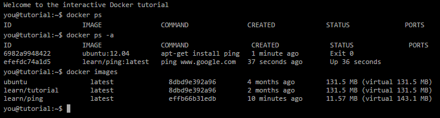
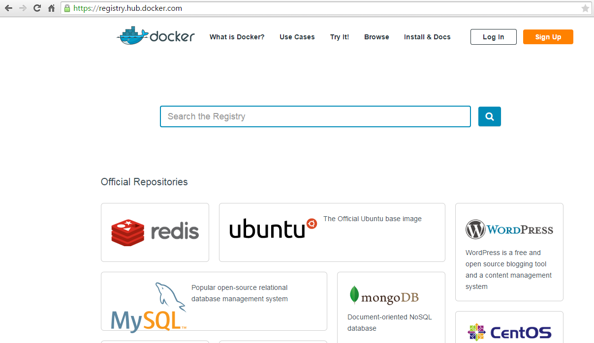
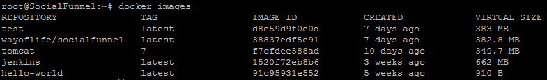
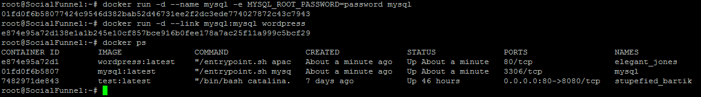

ePortfolio: Docker
Daniel BetscheWas ist Docker?
"Docker is an open platform for developers and sysadmins
to build, ship, and run distributed applications"
Features
- Docker engine
- Docker hub
Docker engine
Docker hub
Installation
Docker oder boot2docker installieren
docs.docker.com/installation
Zugrunde liegende Technologie
Namespaces
- pid : Prozess Isolation
- net : Netzwerk interfaces
- ipc : Interprozesskommunikation
- mnt : mount-points (Datenträger)
- uts : Unix Timesharing System
Control groups
- Einteilung von Ressourcen
- Priorisierung
- Buchhaltung
- Kontrolle
Union File System

Container Format
- libcontainer
- LXC
- BSD Jails
- Solaris Zones
Wie nutze ich Docker?
Docker Images
Dockerhub -> Pull and Push

Docker containers

Images selbst erstellen
Aus einem Container erzeugen
docker commit container_id image_name